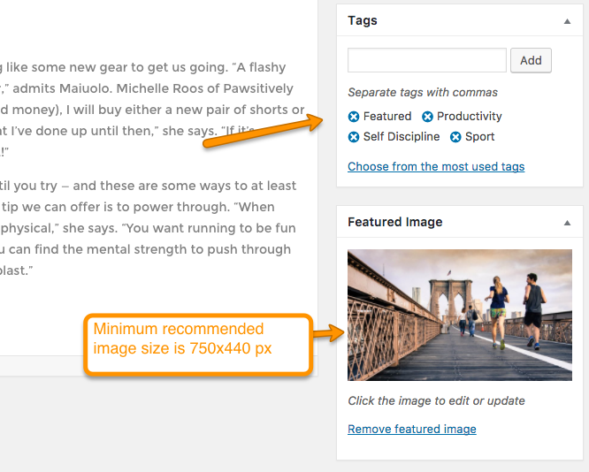
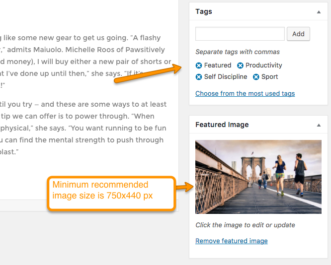
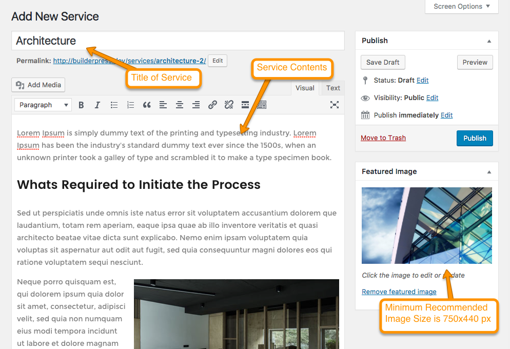
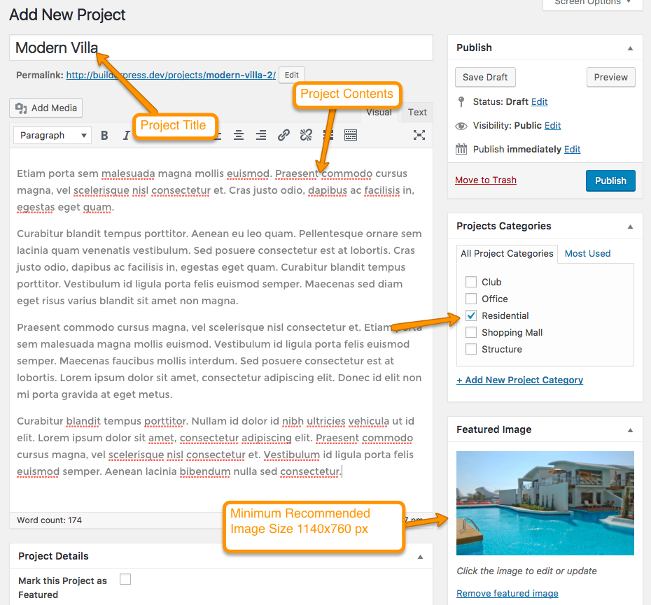
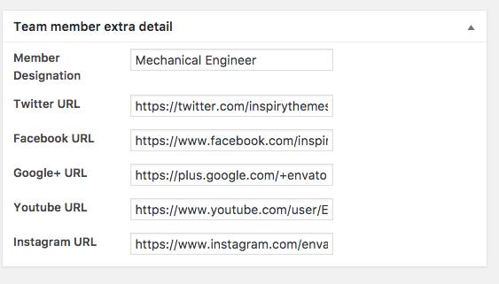

Adding Contents¶
Add Blog Posts¶
Go to WordPress Admin > Posts > Add New

Enter to Post contents and Featured image with minimum receommended size of 750x440 px and click on "Publish".
 

Add Services¶
Go to WordPress Admin > Services > Add New
Enter Service contents and Featured image with minimum receommended size of 750x440 px as shown in image below.
 Now go down in Service Details Meta box, select Projects which are related to this service. This projects checkbox list will only appear if Projects are added. You can learn how to Add Projects in next section.
 These selected projects will be shown on service detail page as shown in image below.
Give Brochures Headings to override default heading of "Related Projects" as shown in image below.
These selected projects will be shown on service detail page as shown in image below.
Give Brochures Headings to override default heading of "Related Projects" as shown in image below.
Click on "Add Media" button of Service Brochures to add service related brochures. These Brochures will be shown on service detail page.

Select the file and edit Title as given in screenshot below.

A button for download file will appear on service detail page. You can add as many Brochures as you want.

Click on "Publish" and the service has been added.
Add Projects¶
Go to WordPress Admin > Projects > Add New

Enter Project contents and Featured image with minimum receommended size of 1140x760 px.

Now go down to Project Details meta box and add Project related details as shown below in image. If checkbox is checked, Project will be shown in Featured Projects.
Go through Visual Composer Elements in documentation to learn about Featured Project 1 and Featured Project 2

When all details are completed click "Publish" button to add Project.
Add Team Members¶
Go to WordPress Admin > Team > Add New Member

Add Team Member details and featured image with minimum recommended size of 720x540 px.

Now go down and add Member's Designation and Social Links as shown in image below. 
Click on "Publish" and the Team Member has been added.
Add Testimonials¶
Need Quick and Easy Testimonials plugin to be installed and activated.
Go to WordPress Admin > Testimonials > Add New Member

Add Testimonials details with featured image of size 150x150 px. You can add your gravatar by giving email address.

Add Products¶
Need WooCommerce plugin to be installed and activated.
Go to WordPress Admin > Products > Add New Product

Add Product contents with minimum recommended image size 600x600 px.